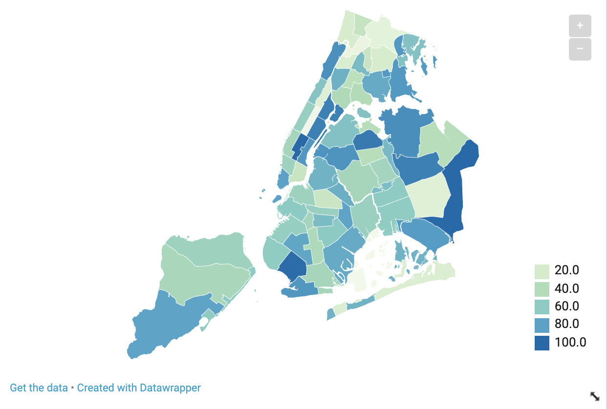
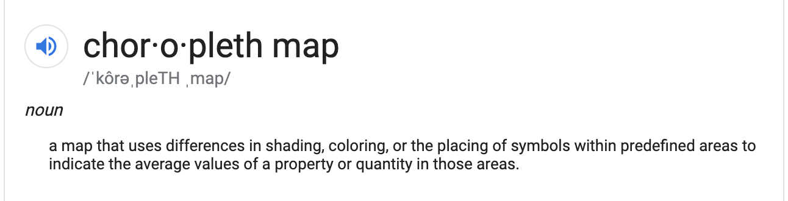
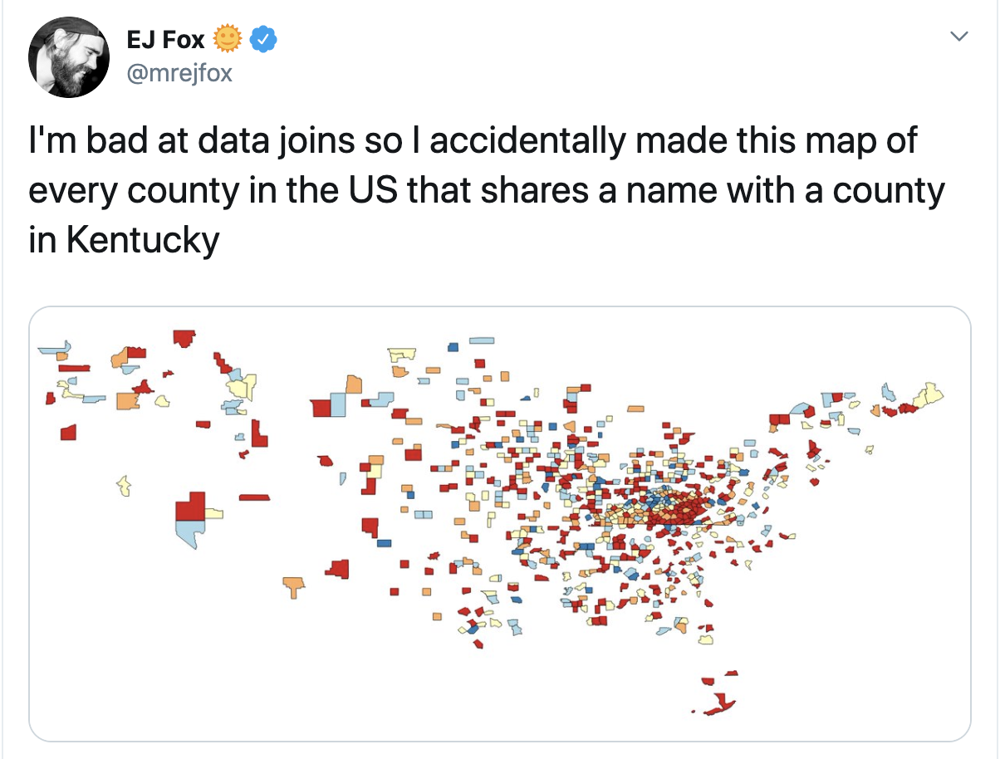
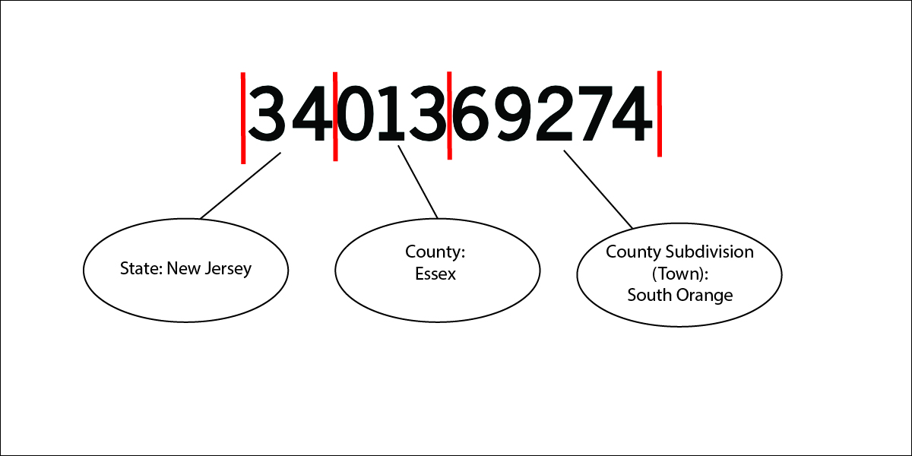
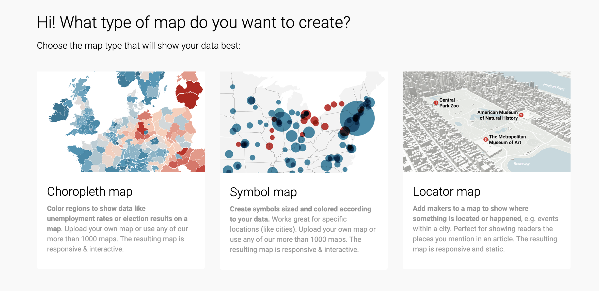
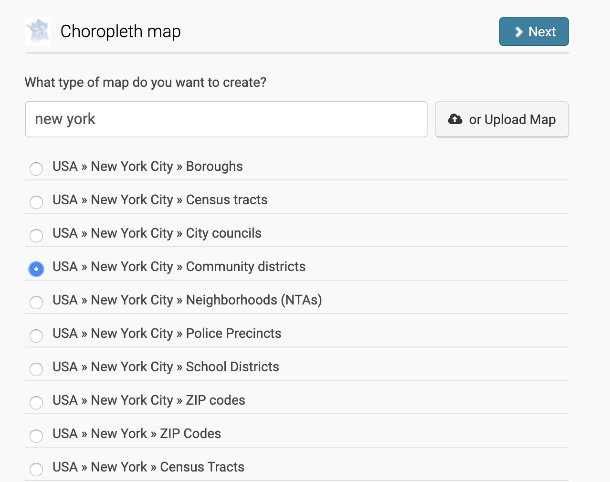
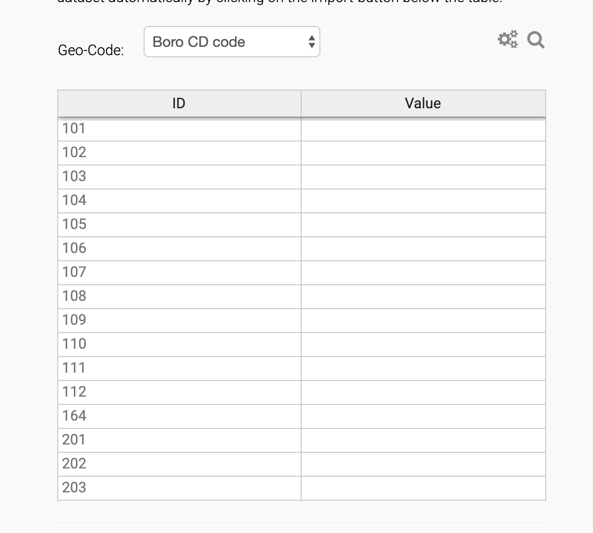
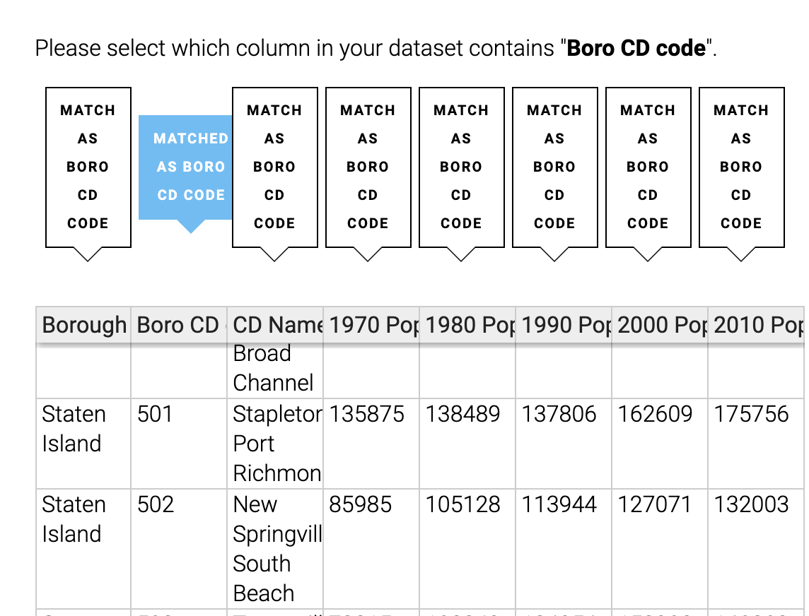
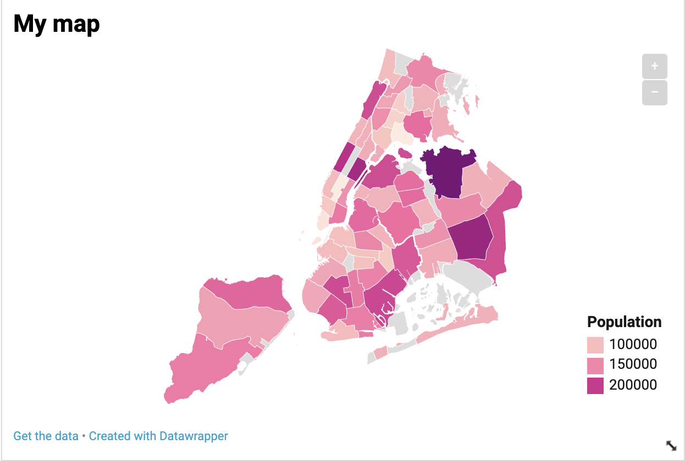
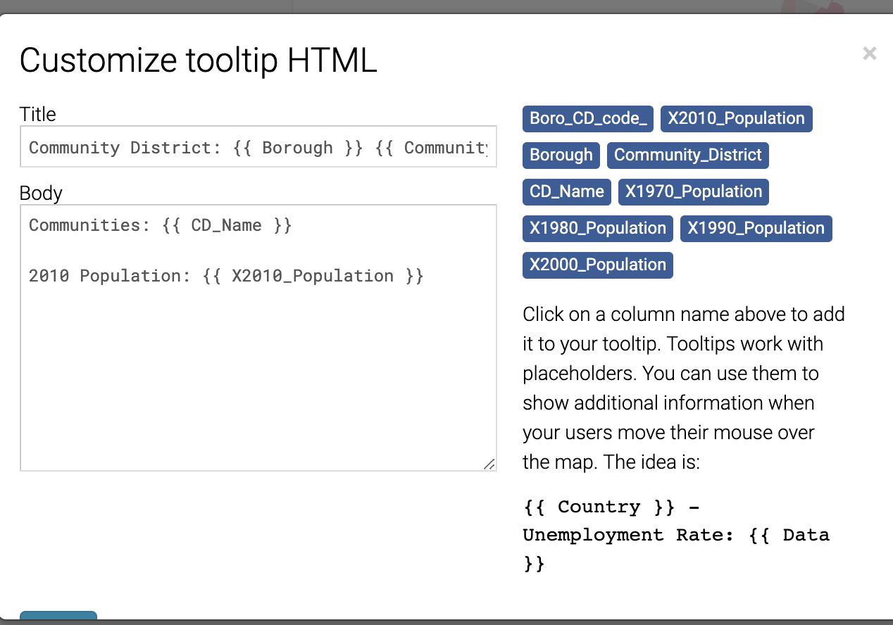

# Choropleth is an ugly word
#### That said, they're pretty cool.
#### You're probably familiar with choropleth maps because they're ubiquitous and frequently used as live election maps to show results.
#### By definition...

#### While the definition of a choropleth map is pretty simple, they're a bit more complicated to make than a point map.
#### That's because while you can geocode a series of points fairly easily, you have to actually connect data to geographic boundary files to create a choropleth through a process called `joining.`
## Boundary Files
#### Before we get there, let's start with boundary files. These exist in many places for virtually every type of geography you can think of, from states in the U.S. down to [Community Board Districts in New York City.](https://data.cityofnewyork.us/City-Government/Community-Districts/yfnk-k7r4)
#### Generally, these are referred to as vector GIS files. They take a lot of different forms:
- Shapefile
- GeoJSON
- TopoJSON
- KML/KMZ
- GeoTIFF
#### These are some of the types I use most frequently, but there's plenty more.
#### Some programs, like DataWrapper, have these files already built into their system. Others require you to download them and match them with your data before you upload.
#### For that you need...
## Unique identifiers!
#### A unique identifier is a string of characters, generally numbers, that give each row of your data its own identity. They're used in place of, say, town names, because they're harder to screw up. With names, you could have one dataset refer to this city as New York City, NY and another as New York, NY.

#### To join two files, you need an exact match.
### Census FIPS codes
#### The Census is a good example of unique IDs because it has a system for identifying every geography it analyzes.
#### This is where I live:
<br>
<h1 style="text-align: center;">3401369274 </h1>
<br>
#### Doesn't make much sense at first blush. But here's how that breaks down.
<br>
<br>

<br>
#### You can create a join in a number of programs, such as [CSVKIT on the command line](https://csvkit.readthedocs.io/en/latest/#) or [QGIS, a free mapping software program.](https://www.qgis.org/en/site/)
#### I'm not going to require you to perform a formal join for this class. We'll use Datawrapper, which takes some of the complication out of it.
## Let's make a choropleth map!
#### Fire up your Datawrapper accounts and download this dataset: [I'm data!](assets/nyc-cd-pop.csv)
#### If you open up DataWrapper and select "New Map", you'll be given a choice. DataWrapper can make a few kinds of maps I'd encourage you to experiment with.

<br>
#### But we want a Choropleth, so select that.
#### Next you'll be taken to a search page, which contains all of the different types of boundary files DataWrapper has. Search New York.

#### Select the "Community Districts" option and click next.
#### That should bring you to a screen like this:

<br>
#### Note the ID column that's already there. That's the unique ID you need in order to make a map. The unique ID for Community District is:
- Single digit number: 1-5 = Borough
- two digit numnber = Community District
#### All official NYC data should have this. I downloaded some population data from NYC Open Data for our example.
#### Now, the safest way to upload data here is to click the import data button on the bottom.
#### Note the stern warning:
<img src="assets/warning/png" width="80%">
#### This is just saying that it requires the data you're using to have a column named `Boro CD code:` in order to sync with their boundary file.
#### If you look at our data, I've already done that.
#### Click "Start Import", then paste the dataset I provided into the box and click "Next."
#### If you've done it right, you should get a screen like this:

<br>
#### Hooray!
#### Click next and select the column you want to use to color the map. We'll use 2010 population.
#### Your map should look something like this:

<br>
#### Great! Now you can style and publish your map just like you did with your Datawrapper charts.
### Tooltips
#### Let's do one more thing though. People are probably going to want to see the actual population number, so let's create a tooltip.
#### Here's the one I made for mine:

#### Here, if you type any column header from your data in a double bracket ** `{{ }} `** it will fill in the blank with the corresponding data for that geographic location.
#### Think of it like mapping madlibs.
#### You can also use basic HTML/CSS to change the styling of things.
#### Datawrapper also allows you to customize the colors, legend and other style variables just like you would a chart.
#### Once you're done, hit publish and Voila! You hath mapped.
<iframe title="My super fabulous map of NYC population from like 9 years ago but it's still super great" aria-label="USA new york city community districts choropleth map" id="datawrapper-chart-ckrLl" src="//datawrapper.dwcdn.net/ckrLl/1/" scrolling="no" frameborder="0" style="width: 0; min-width: 100% !important; border: none;" height="400"></iframe><script type="text/javascript">!function(){"use strict";window.addEventListener("message",function(a){if(void 0!==a.data["datawrapper-height"])for(var e in a.data["datawrapper-height"]){var t=document.getElementById("datawrapper-chart-"+e)||document.querySelector("iframe[src*='"+e+"']");t&&(t.style.height=a.data["datawrapper-height"][e]+"px")}})}();</script>